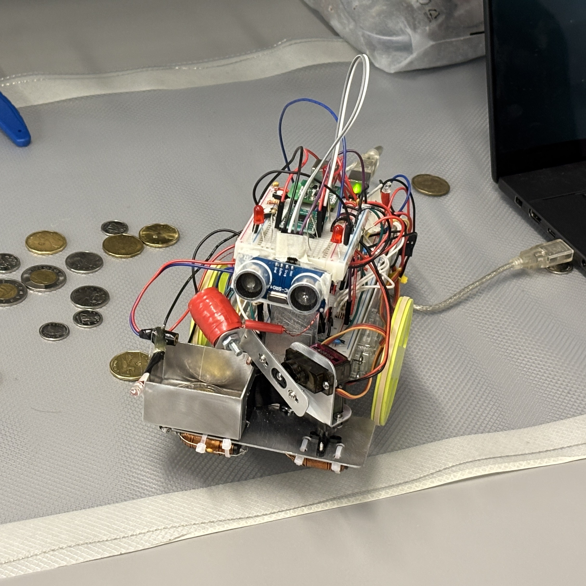
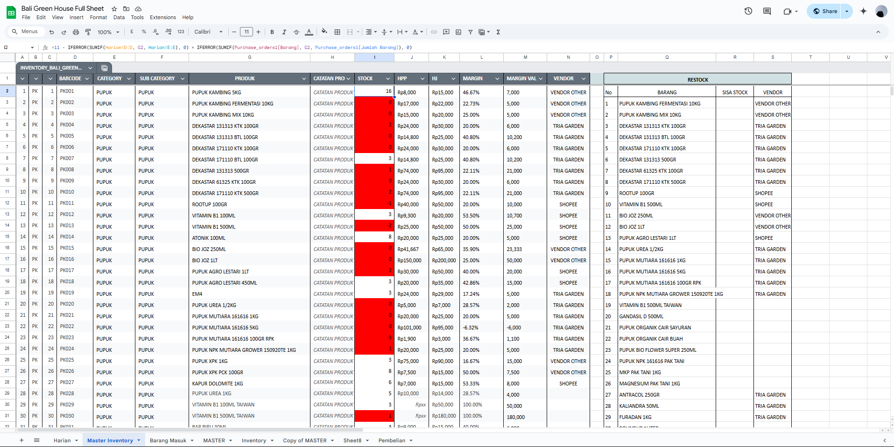
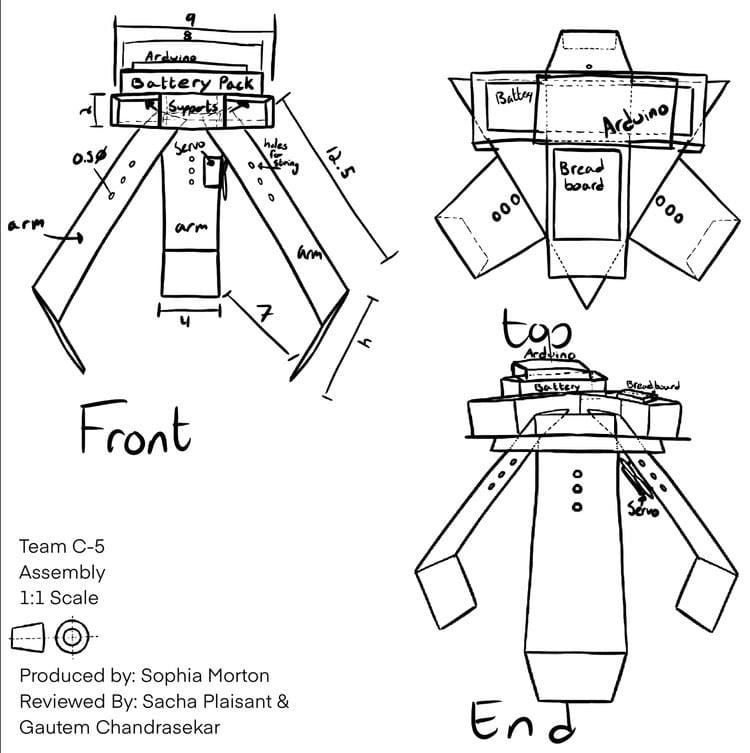

All Projects
Haptic Knob
BLDC haptic interface that emulates circuit element feel (R, L, C, diode) through torque feedback. Closed-loop FOC, encoder feedback, and dual-core FreeRTOS on the ESP32-PICO with SPI OLED display.
RoboMaestro — H-Bridge Motor Driver
Discrete MOSFET H-bridge designed from scratch in Altium Designer. Gate-drive networks with bootstrap caps, dead-time control, decoupling strategy, and noise-aware 2-layer layout for PWM motor driving.
Emergency Stop System
Hardware power-cutoff system for the Robocup@Home robot. Relay-based fail-safe isolation with schematic capture and 2-layer PCB in Altium. LTSpice-validated <50 ms response time from button actuation to full power isolation.

Reflow Oven Controller
8051-based FSM controller with K-type thermocouple signal conditioning (op-amp amplification + RC filter), PWM-driven SSR, and Python/Excel live strip-chart logging at ±2°C thermal accuracy.

Coin Picking Robot
Multi-microcontroller robot (EFM8LB1, MSP430, LPC824) with JDY-40 wireless switching between autonomous coin-collection FSM and manual joystick control. PWM motor drive with ISR-based real-time sensing.
Oscilloscope & Multimeter
555-timer frequency-shift measurement circuit paired with a microcontroller to probe voltage, resistance, and capacitance at ~1 mV, 10 Ω, and 1 pF resolution. Python serial visualisation for real-time plotting and calibration.

Alarm Clock (8051)
8051 real-time clock with alarm and buzzer output. Button-driven time and alarm setting, interrupt-based timekeeping, and 7-segment display output.
RISC CPU (Verilog)
Designed and simulated a reduced instruction-set CPU in Verilog on the DE1-SoC. Datapath, control unit, ALU, and register file. Verified with ModelSim waveforms.

Mini Power Bank
Compact USB power bank with a Li-ion cell, TP4056 charge management IC, and MT3608 boost converter to deliver regulated 5 V from a 3.7 V battery.

Inventory Analysis System
Excel-based real-time stock tracking system with conditional alerts, pivot dashboards, and automated reorder flagging for a retail electronics store.

Spreadsheet Cashier System
Google Sheets POS system with transaction logging, balance tracking, and automated daily summaries for a retail store.

The Claw
Joystick-controlled mechanical claw using servo motors. Built for object gripping and fine dexterity tasks.
Audio-Responsive LED Matrix
LED matrix that pulses to music amplitude via a microphone ADC input. Creates a live audio-reactive light display.
Kinetic-Powered LED
Hand-crank dynamo powering LEDs through a rectifier and smoothing capacitor — demonstrating mechanical to electrical energy conversion.